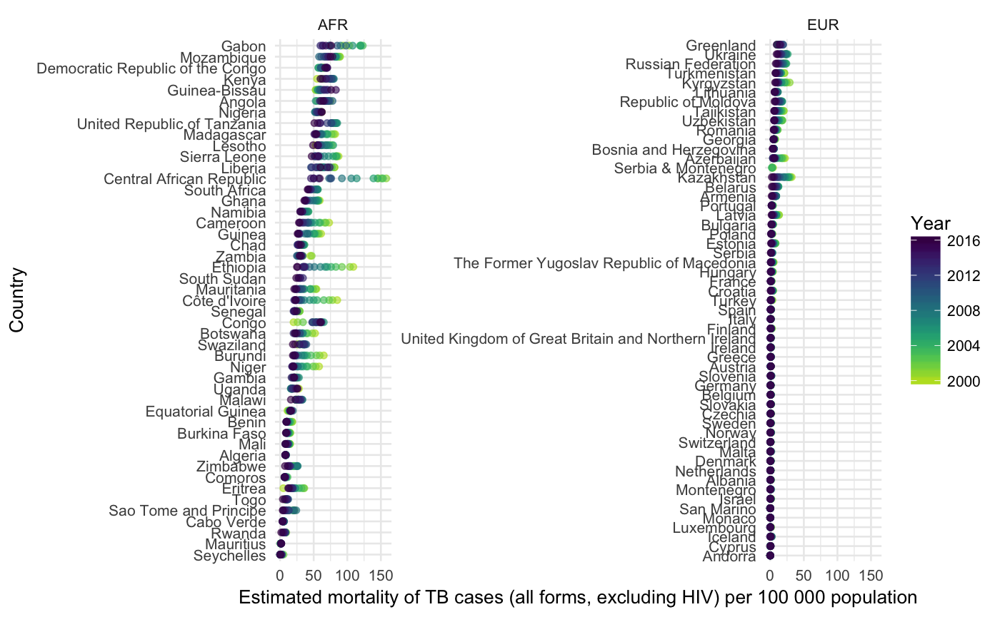

Plot an overview of TB Burden for Multiple Countries
This functions returns a dot plot for a given metric over a specified
list of countries. If compare_to_region is specified then a given country will
be compared to others in its region. This enables the user to rapidly understand trends in
Tuberculosis over time and the progress towards global elimination.
plot_tb_burden_overview(df = NULL, dict = NULL, metric = "e_inc_100k", metric_label = NULL, countries = NULL, compare_to_region = FALSE, facet = NULL, scales = "free_y", interactive = FALSE, download_data = FALSE, save = FALSE, burden_save_name = "TB_burden", dict_save_name = "TB_data_dict", path = "data-raw", verbose = TRUE, ...)
Arguments
| df | Dataframe of TB burden data, as sourced by |
|---|---|
| dict | A tibble of the data dictionary. See |
| metric | Character string specifying the metric to plot |
| metric_label | Character string specifying the metric label to use. |
| countries | A character string specifying the countries to plot. |
| compare_to_region | Logical, defaults to |
| facet | Character string, the name of the variable to facet by. |
| scales | Character string, see ?ggplot2::facet_wrap for details. Defaults to "fixed", alternatives are "free_y", "free_x", or "free". |
| interactive | Logical, defaults to |
| download_data | Logical, defaults to |
| save | Logical, should the data be saved for reuse. Defaults to
|
| burden_save_name | Character string, name to save the data under. Defaults to
|
| dict_save_name | Character string, name to save dictionary under. Defaults to
|
| path | Character string, indicating the folder to save the data into,
defaults to |
| verbose | Logical, defaults to |
| ... | Additional parameters to pass to |
Value
A dot plot of any numeric metric by country.
See also
get_tb_burden search_data_dict
Examples
## Plot incidence rates over time for both the United Kingdom and Botswana plot_tb_burden_overview(countries = c("United Kingdom", "Botswana"), compare_to_region = FALSE, download_data = TRUE, save = TRUE)#>#>#>#>## Compare incidence rates in the UK and Botswana to incidence rates in their regions plot_tb_burden_overview(countries = c("United Kingdom", "Botswana"), compare_to_region = TRUE)#>#>#>#>#>#> # A tibble: 6 x 4 #> variable_name dataset code_list definition #> <chr> <chr> <chr> <chr> #> 1 e_mort_exc_tbhiv_100k Estimates "" Estimated mortality of TB cases… #> 2 e_mort_exc_tbhiv_100k_hi Estimates "" Estimated mortality of TB cases… #> 3 e_mort_exc_tbhiv_100k_lo Estimates "" Estimated mortality of TB cases… #> 4 e_mort_tbhiv_100k Estimates "" Estimated mortality of TB cases… #> 5 e_mort_tbhiv_100k_hi Estimates "" Estimated mortality of TB cases… #> 6 e_mort_tbhiv_100k_lo Estimates "" Estimated mortality of TB cases…## Compare mortality rates (exc HIV) in the UK and Botswana to mortality rates in their regions ## Do not show progress messages plot_tb_burden_overview(metric = "e_mort_exc_tbhiv_100k", countries = c("United Kingdom", "Botswana"), compare_to_region = TRUE, verbose = FALSE)